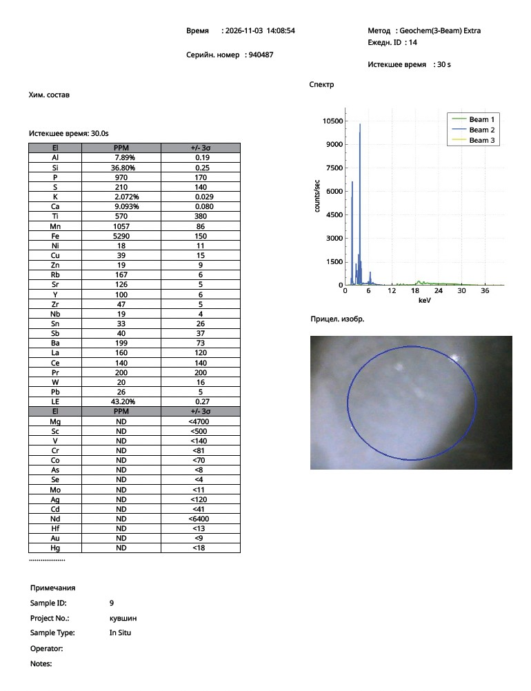
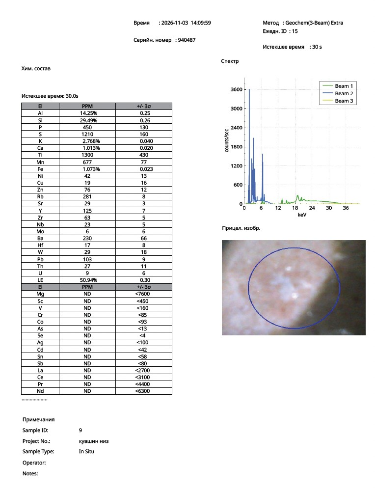

Research Article · Reference Object ro-song-011
X-Ray Fluorescence Analysis of a Qingbai Ewer: Glaze and Body Composition in the Context of Song-Dynasty Ceramic Technology
Nona Dronova — Zenodo, 2026 — Chinese Ceramic Archaeometry · Song-Dynasty Qingbai Porcelain
Abstract
This study presents the results of portable X-ray fluorescence (pXRF) analysis of a qingbai-type ceramic ewer belonging to the ceramic tradition of the Song dynasty in China.
Two analytical measurements were made: one on the glazed outer surface and one on an unglazed area of the base, where the ceramic body is exposed.
The results show a clear chemical distinction between the glaze and the body. The glaze is characterised by an elevated calcium content (9.093 wt% Ca) combined with a silica-rich composition and low lead concentrations. The ceramic body has a substantially lower calcium content (1.013 wt% Ca) together with higher concentrations of aluminium, iron and titanium.
The relationship between glaze and body corresponds to the technological structure of traditional high-fired qingbai ceramics, in which a calcium-rich glaze was applied over an aluminosilicate ceramic body.
The distribution of trace elements, including Rb, Sr, Zr, Nb, Y, La, Ce and Ba, provides additional geochemical information relevant to provenance studies. The morphological characteristics and compositional data together allow this object to be assigned to the qingbai technological tradition associated with Chinese ceramic production of the Song period.
Keywords: qingbai porcelain; Song dynasty; Jingdezhen; Hutian kiln; X-ray fluorescence analysis; ceramic technology; calcium glaze; Chinese ceramics; archaeometry; provenance studies.
1. Introduction
Qingbai ware (青白瓷) is one of the most significant ceramic traditions of Song-dynasty China (960–1279 CE). Characterised by a translucent bluish-white glaze and a refined porcelain body, qingbai ware was widely distributed in East Asia and beyond.
The best-known production centre was Jingdezhen, especially the Hutian kiln complex, although similar wares were produced in several regions of southern China.
Recent archaeometric studies have shown that compositional analysis of both glaze and ceramic body provides valuable information on production technology, the choice of raw materials and firing traditions. X-ray fluorescence spectroscopy has become an important non-destructive method for evaluating historical ceramics and for comparing archaeological material with museum and private collections.
The present study uses portable XRF to examine a qingbai-type ewer in order to determine the chemical composition of its glaze and body and to relate the object to the wider technological context of Song-period ceramic production.
2. Description of the Object
The vessel under study is a ceramic ewer with the following characteristics:
- a globular body;
- a tall cylindrical neck;
- an everted rim;
- a long curved spout;
- a loop handle;
- moulded floral decoration in relief.
The relief decoration appears to depict peony motifs arranged around the body of the vessel.
The glaze has a pale grey-green or bluish-green tone typical of qingbai wares. In the recesses of the decoration the colour intensifies, indicating local differences in glaze thickness.
The base has a clearly defined unglazed area exposing the ceramic body. The exposed part is light beige to pinkish-beige with scattered dark inclusions and a sharp transition between the glazed and unglazed zones.
These morphological characteristics correspond closely to established Song-period qingbai vessel forms.
3. Materials and Methods
Portable X-ray fluorescence analysis was carried out on 3 November 2026 with a spectrometer in Geochem (3-Beam) Extra mode.
| Parameter | Recorded value |
|---|---|
| Instrument serial number | 940487 |
| Analytical mode | Geochem (3-Beam) Extra |
| Date | 3 November 2026 |
| Acquisition time | 30 seconds per reading |
| Sample ID | 9 |
| Measurement No. 14 | Glazed outer surface (14:08:54; project kuvshin) |
| Measurement No. 15 | Unglazed base, ceramic body (14:09:59; project kuvshin niz) |
| Measurement type | In situ, non-destructive |
Two measurements were obtained:
- Measurement No. 14 — glazed outer surface of the vessel.
- Measurement No. 15 — unglazed base, representing the ceramic body.
Results are reported as elemental concentrations in weight per cent and parts per million (ppm).
The major elements were additionally converted into oxide-equivalent values to facilitate comparison with published archaeometric studies of qingbai ware.
4. Results
4.1 Elemental composition
Table 1. Principal element concentrations.
| Element | Glaze (%) | Body (%) |
|---|---|---|
| Si | 36.80 | 29.49 |
| Al | 7.89 | 14.25 |
| Ca | 9.093 | 1.013 |
| K | 2.072 | 2.768 |
| Fe | 0.529 | 1.073 |
| Ti | 570 ppm | 1300 ppm |
| Mn | 1057 ppm | 677 ppm |
| Y | 100 ppm | 125 ppm |
| Pb | 26 ppm | 103 ppm |
The glaze contains approximately nine times more calcium than the body.
By contrast, the body contains:
- a substantially higher aluminium content;
- a higher iron content;
- higher titanium concentrations.
This compositional separation demonstrates the use of chemically different materials for the glaze and the ceramic body.
4.2 Trace elements
Table 2. Selected trace elements (ppm).
| Element | Glaze | Body |
|---|---|---|
| Rb | 167 | 281 |
| Sr | 126 | 29 |
| Y | 100 | 125 |
| Zr | 47 | 63 |
| Nb | 19 | 23 |
| Ba | 199 | 230 |
| La | 160 | ND |
| Ce | 140 | ND |
| Pb | 26 | 103 |
The trace-element spectrum reveals a geochemical signature typical of high-fired aluminosilicate ceramic systems and provides a basis for future provenance comparisons with kiln centres in Jiangxi province and related qingbai production regions.
5. Oxide-Equivalent Composition
Table 3. Oxide-equivalent values (stoichiometric conversion of the measured elements).
| Oxide | Glaze | Body |
|---|---|---|
| SiO₂ | 78.72% | 63.10% |
| Al₂O₃ | 14.91% | 26.92% |
| CaO | 12.72% | 1.42% |
| K₂O | 2.50% | 3.33% |
| Fe₂O₃ | 0.76% | 1.53% |
| TiO₂ | 0.095% | 0.217% |
Silica and calcium dominate the glaze, whereas the body is dominated by a refractory aluminosilicate composition.
6. Glaze Technology
The most characteristic feature of the glaze is its elevated calcium concentration.
The measured value of 9.093 wt% Ca (corresponding to approximately 12.72 wt% CaO) indicates a high-temperature, high-calcium glaze system.
Calcium acts as an effective flux, lowering the melting temperature and promoting the formation of a transparent glassy phase during firing.
The glaze also contains:
- moderate potassium;
- detectable manganese;
- a low iron concentration;
- extremely low lead.
A lead concentration of only 26 ppm confirms that the glaze belongs to an essentially leadless technological system consistent with high-temperature porcelain production.
The iron concentration of approximately 0.76% Fe₂O₃ lies within the compositional range capable of giving qingbai glazes their characteristic blue-green appearance when a reducing kiln atmosphere is used.
7. Composition of the Ceramic Body
The body shows elevated aluminium and silicon together with a comparatively low calcium concentration.
The calculated body composition includes:
- SiO₂ = 63.10%
- Al₂O₃ = 26.92%
- K₂O = 3.33%
- CaO = 1.42%
- Fe₂O₃ = 1.53%
- TiO₂ = 0.217%
A particularly informative parameter is the Al₂O₃/SiO₂ ratio: 0.427.
This value indicates a high alumina content in the ceramic body, reflecting the use of refractory clay materials suitable for high-temperature firing.
The elevated alumina content is consistent with the porcelain-making technologies developed in southern China during the Song dynasty.
8. Technological Interpretation
The relationship between the glaze and the body demonstrates a coherent technological system:
- A silica-rich glaze with a calcium flux.
- An aluminosilicate ceramic body.
- A minimal lead content.
- A controlled iron level governing the glaze colour.
- High-temperature firing technology.
This combination is characteristic of the ceramic engineering principles underlying qingbai porcelain production.
The sharp chemical contrast between the glaze and the body deserves particular attention, as it confirms deliberate technological differentiation rather than chemical homogenisation.
9. Archaeometric Significance
The analysis shows that this vessel combines morphological and compositional characteristics typical of the qingbai ceramic tradition.
The principal diagnostic features are:
- a calcium-rich glaze;
- a silica-dominated glassy phase;
- an alumina-enriched ceramic body;
- a very low lead concentration;
- a moderate iron level;
- a geochemically consistent trace-element assemblage;
- traditional qingbai vessel morphology.
Together these data provide a detailed archaeometric characterisation of the object and contribute to the growing body of analytical studies of Song-period Chinese ceramics.
10. Conclusions
Portable X-ray fluorescence analysis of the qingbai-type ewer produced the following principal results:
- The glaze contains an elevated amount of calcium (9.093 wt% Ca), indicating a high-temperature calcium glaze.
- The ceramic body contains considerably more aluminium (14.25 wt% Al) and less calcium (1.013 wt% Ca), demonstrating a clear chemical distinction between body and glaze.
- Extremely low lead concentrations place the material within a leadless porcelain technology.
- The iron concentrations are consistent with the formation of the characteristic blue-green colour of qingbai ware.
- The ceramic body shows an elevated Al₂O₃/SiO₂ ratio (0.427), reflecting an alumina-rich refractory composition.
The results establish a clearly defined technological profile consistent with the qingbai ceramic tradition and make an important contribution to the archaeometric documentation of high-fired Chinese ceramics of the Song period.
Original pXRF Protocols
Portable XRF analyser, serial no. 940487 — 3 November 2026

Fig. 1. Measurement No. 14 — glazed outer surface. Click to open full size.

Fig. 2. Measurement No. 15 — unglazed base (ceramic body). Click to open full size.
References
Unveiling the secrets of Song-dynasty qingbai porcelain. https://doi.org/10.1142/S2010135X25500092
Provenance and firing technology of qingbai porcelain. Analytical Methods. https://doi.org/10.1039/D5AY01790D
Early stages in the development of Jingdezhen ceramic glazes. Archaeometry. https://doi.org/10.1111/arcm.12539
Provenance of qingbai ware from the Shabian kiln. Archaeometry. https://doi.org/10.1111/arcm.12540
Production of qingbai and grey-green wares at Huxi. Archaeological and Anthropological Sciences. https://doi.org/10.1007/s12520-021-01464-4
Smithsonian National Museum of Asian Art. Qingbai bowl, F1944.47.
The Metropolitan Museum of Art. Qingbai vase, 26.292.87.
Suggested Citation
Dronova, N. (2026). X-Ray Fluorescence Analysis of a Qingbai Ewer: Glaze and Body Composition in the Context of Song-Dynasty Ceramic Technology. Zenodo. https://doi.org/10.5281/zenodo.23954334